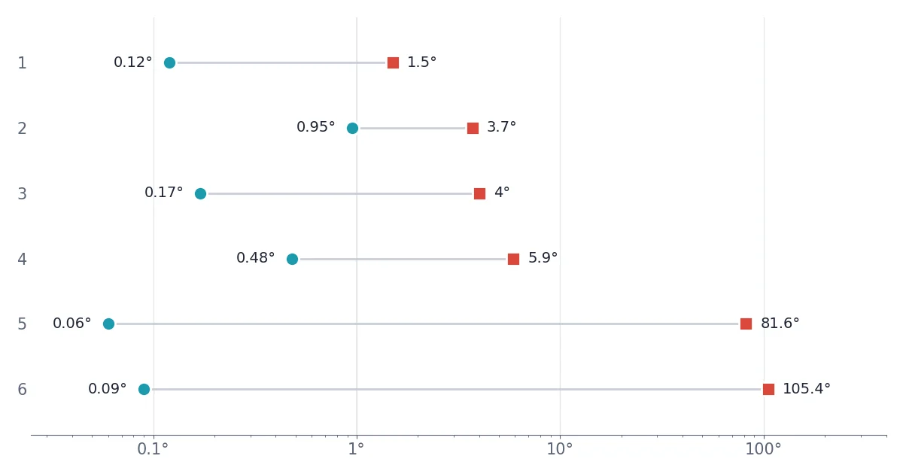

Gratis app som viser navn på fjell: vi testet toppfinneren
Du står på en terrasse i Zermatt, på en egg i Pyreneene eller i en skiheis i Colorado, og noen spør: hvilken topp er det der? Toppfinneren i SnowScope-appen gir deg svaret. Pek mobilen mot fjellene, så tegner den horisontlinjen og skriver navnene på toppene på skjermen, med høyde, avstand og omtrent hvor lang tid det tar å gå opp. Den er gratis å laste ned, virker uten nett når du har området på mobilen, og navn på alle toppene koster én enkelt betaling på 13 kr i Norge (0,99 $ i USA, 0,99 € i Europa), uten abonnement. Vi har også testet hvor ofte den har rett, og her viser vi tallene, også der den fortsatt bommer.
Se snøprognosen for Zermatt direkte i SnowScope-appenSnødybde, puddervarsler og 3D-kartet, gratis.
Hva toppfinneren gjør
Åpne SnowScope, trykk på kameraet og velg Topper. Appen leser av hvor du står og hvilken vei mobilen peker, og tegner så fjellenes linje oppå kamerabildet. Hver topp du kan se får en etikett: navn, høyde og avstand. Trykk på en for å låse den, så ser du retningen i grader, gangtiden fra der du står og vanskelighetsgraden på den vanlige ruten. Sveip for å gå fra én topp til den neste.
Noen ting skiller den fra en enkel liste over topper i nærheten. Topper som skjules bak en nærmere egg, vises ikke som om du kunne se dem; åpner du en topp fra kartet som ikke er i sikte, står det på kortet. Rutekortet viser stigningen opp og ned, om du rekker tilbake før solnedgang og hvor mye snø det ligger på veien, for SnowScope er først og fremst en snøapp. Du kan ta et bilde eller et kort klipp med navnene på og dele det.
Slik virker det, enkelt forklart
Toppfinneren gjetter ikke ut fra en bildedatabase. Den bygger opp landskapet rundt deg fra et høydekart over terrenget: punkter for hver 30. meter innenfor 8 km fra deg, for hver 90. meter ut til 40 km, og et lettere kart lenger unna, opptil 120 km. Fra der du står sender den en siktlinje i alle retninger og tar vare på det høyeste punktet hver linje treffer. Det gir horisontlinjen du skal se, og en topp får bare navn hvis den rager over alt foran den. Første gang du bruker den på et sted, laster den ned 1 til 3 MB terreng; etter det virker den helt uten dekning.
Det vanskelige er retningen. Et mobilkompass forstyrres lett av en bil, et metallrekkverk eller en skiheis, og noen få grader er nok til å sette feil navn på en topp: 5° på 10 km er 875 m til siden, ofte en helt annen topp. Derfor stoler ikke toppfinneren bare på kompasset. Den leter etter linjen der himmelen møter fjellene i kamerabildet og dreier den tegnede horisontlinjen til de to stemmer overens. Når den har låst, holder mobilens gyroskop etikettene i ro mens du panorerer, og kompasset kan ikke lenger dra dem bort.

Hvor nøyaktig er den? Dette målte vi
Vi gjorde tre tester, og vi oppgir dem med størrelse, for et tall uten testen bak er lite verdt.
Test 1: hvilke topper er virkelig i sikte. På 14 steder i Alpene, Pyreneene og Rocky Mountains, fra torg i landsbyer som Zermatt og Grindelwald til utsiktspunkter som Aiguille du Midi og Pic du Midi, sammenlignet vi toppene appen lister opp med en langsom, fullt detaljert beregning som bruker 30 m-terreng hele veien ut til 120 km. Av de 5 449 toppene som virkelig var i siktlinjen, listet appen opp 5 330 (97,8 %), og 98,1 % av toppene den listet opp var virkelig i sikte. På de 12 stedene som ikke er store utsiktspunkter, er avviket enda mindre: 975 av 983 funnet, 8 for mye. Alle 97 kontrollene av kjente topper var riktige, for eksempel Matterhorn fra Zermatt på 8,6 km, Mont Blanc fra Chamonix på 10,1 km og fra Grenoble på 113 km.
Test 2: ekte bilder. Vi tok 12 bilder med en mobil i Ourika-dalen og rundt Oukaïmeden i Høyatlas i Marokko, og lagret hva mobilens sensorer sa ved hvert bilde. 6 bilder hadde en tydelig horisontlinje. Kompasset bommet med mellom 1,5° og 105,4° (de to verste nær metallet i et skianlegg); medianen var 5°. Etter matchingen av horisontlinjen låste alle 6, med en medianfeil på 0,15° og en største feil på 0,95°. På 10 km tilsvarer 0,15° 26 m. De andre 6 bildene viste trær, en frontrute eller ingen himmel i det hele tatt, og appen nektet med rette å låse på noen av dem. Vi matchet også hvert bilde mot horisontlinjene fra andre steder i nærheten: 0 låsinger på 36 forsøk, så den låser seg ikke på feil fjell.
Test 3: simulerte utsikter. For å teste langt flere situasjoner enn vi kunne fotografere, tegnet vi 168 kamerautsikter fra terreng på 6 steder, med skyer, dis, snø mot en blek himmel, lav sol og gjenstander i forgrunnen, og kompassfeil på opptil 100°. Under panorering låste 107 av de 168 i løpet av omtrent ett sekund (64 %), med en medianfeil på 0,18°, og ingen låste på feil sted. Resten ble værende på kompasset, og da ber appen deg om å kalibrere det.


Hva testene våre ikke viser
Dette er våre egne tester, ikke en uavhengig vurdering. De ekte bildene er få, 6 med tydelig horisontlinje, og alle kommer fra én mobil i én fjellkjede; de 14 stedene i Test 1 sammenligner to beregninger laget fra de samme høydekartene og den samme topplisten, så en feil i selve kartdataene ville ikke synes. Navn og høyder kommer fra OpenStreetMap, som er svært godt i Alpene og tynnere i enkelte fjellkjeder.
Toppfinneren må se horisontlinjen. I tåke, tett snøfall, under en lav grå himmel med snø på bakken eller i skogen kan den ikke låse og faller tilbake på kompasset; i de simulerte utsiktene våre låste den aldri når snødekte lier møtte en overskyet himmel i samme grånyanse. Kalibrer da kompasset ved å bevege mobilen i et åttetall, slik appen ber om, og stol mer på de store toppene enn på de små knausene.
Hva som er gratis, og hva Pro koster
Appen er gratis å laste ned, med reklame. I toppfinneren ser gratisbrukere hele horisontlinjen, avstand, høyde og tid til toppen for hver topp i sikte, og navnene på de 3 viktigste toppene i bildet, den høyeste først. En topp du åpner fra kartet, beholder også navnet sitt. De andre toppene vises som Topp pluss høyden, med en liten lås.
SnowScope Pro viser navnet på hver topp. Det er et engangskjøp, uten abonnement: på Google Play koster det 13 kr i Norge, 0,99 $ i USA, 0,99 € i eurolandene, 0,99 £ i Storbritannia, 0,90 CHF i Sveits og 14 kr i Sverige, slik prisene var oppført 13. november 2026. Den samme betalingen fjerner også reklamen og låser opp 3D-videoene av skistedet ditt. Noen brukere får også tilbud om en kort videoreklame som gir navn på alle toppene i 24 timer, gratis.
Slik står den seg mot PeakFinder, PeakVisor og PeakLens
PeakFinder, PeakVisor og PeakLens er kjente apper som gjør jobben godt, hver på sin måte, og tabellen oppsummerer hva deres egne butikksider og nettsteder sa 13. november 2026. PeakFinder er en betalingsapp (5,99 $ på Google Play i USA), med én betaling og uten reklame; den kjenner til mer enn 1 000 000 topper over hele verden, tegner landskap opptil 300 km unna og virker helt uten nett. PeakVisor er gratis å laste ned med en betalt PRO-oppgradering som selges som abonnement, legger til 3D-kart, stier og GPS-sporing, og oppgir at den dekker mer enn en million fjell. PeakLens er gratis å laste ned og kommer fra en forskergruppe ved Politecnico di Milano; i likhet med SnowScope sammenligner den kamerabildet med en terrengmodell for å rette kompassfeil, og den lister opp mer enn 200 000 topper.
Der SnowScope skiller seg ut: den koster 0,99 $ én gang for alle navnene, og du kan bruke den gratis med 3 navn; den legger til tid til toppen, ruten og snøen på veien; og den samme appen gir deg snøvarsel, snødybde og skredfaregrad for fjellet du ser på. Der den gjør mindre: den dekker 7 fjellregioner, ikke hele verden, og listen med 164 051 navngitte topper er mindre enn de verdensomspennende listene til de andre.
Tips for best resultat
Still deg der du ser åpen himmel over eggene, og hold mobilen loddrett i øyehøyde. Panorer sakte over utsikten i et sekund eller to: matchingen er sterkest når den ser en lang, takkete horisontlinje. Gå unna biler, metallrekkverk og heismaster før du begynner. Sier appen at kompasset må kalibreres, beveger du mobilen i et åttetall. Før en tur uten dekning: last ned området ditt én gang på wifi fra toppfinnerens offline-skjerm.
Hvor den virker
Toppfinneren virker i de 7 fjellregionene SnowScope dekker: Alpene (79 564 navngitte topper), Pyreneene (13 506), Skandinavia (21 133), det vestlige USA (34 720), det nordøstlige USA (6 786), det vestlige Canada (7 672) og Atlas i Marokko (670). En hel region til bruk uten nett tar mellom 25 MB (Pyreneene) og 401 MB (det vestlige USA); du kan også bare bruke kameraet på nett, så tar den vare på det den laster ned.
Hva er den beste gratis appen som viser navn på fjell?
Det kommer an på hvor du går tur eller står på ski. Er du i Alpene, Pyreneene, Skandinavia, det vestlige eller nordøstlige USA, det vestlige Canada eller Atlas, er SnowScope gratis å bruke med de 3 viktigste navnene i bildet og koster 13 kr én gang for alle. For andre fjellkjeder dekker en verdensomspennende app som PeakFinder eller PeakVisor mer.
Finnes det en app som viser navn på fjell i kameraet?
Ja. SnowScope, PeakFinder, PeakVisor og PeakLens legger alle fjellnavn på kamerabildet. SnowScope tilpasser i tillegg den tegnede horisontlinjen til den ekte i bildet, slik at navnene blir stående på riktige topper selv når kompasset tar feil.
Er SnowScope et gratis alternativ til PeakFinder?
I regionene den dekker, ja: nedlastingen er gratis, horisontlinjen og 3 navn er gratis, og alle navnene koster 13 kr én gang, uten abonnement. PeakFinder er en betalingsapp som dekker hele verden.
Virker toppfinneren uten nett?
Ja. Last ned området ditt én gang fra toppfinnerens offline-skjerm, eller bruk kameraet på nett først: det den laster ned, blir liggende på mobilen. GPS virker uten mobildekning.
Hvorfor havner navnene noen ganger på feil sted?
Som regel er kompasset forstyrret eller horisontlinjen skjult av skyer eller trær, så appen ikke klarer å matche den. Pek mot en tydelig egg, panorer sakte og kalibrer kompasset. Topper som er merket som delvis skjult, stikker så vidt opp over en nærmere egg.
Finnes toppfinneren på iPhone?
I dag finnes toppfinneren i SnowScope-appen på Google Play for Android-mobiler.
Tips til skiløpere
- Panorer sakte over en tydelig, takkete horisontlinje i et sekund eller to: det er da navnene låser seg.
- Hold deg unna biler, rekkverk og heismaster, og kalibrer kompasset med et åttetall hvis appen ber om det.
- Last ned området ditt på wifi før en tur uten dekning.
- I tåke eller under en flat grå himmel: stol mer på de store toppene enn på de små knausene.
Flere kart (eksterne nettsteder)
Referanser og kilder
- Google Play: SnowScope: Snow & Powder (priser for SnowScope Pro, lest 13. november 2026) play.google.com/store/apps/details?id=snowruler.app&utm_source=snowscope_blog&utm_medium=blog&utm_campaign=peakfinder
- PeakFinder på Google Play (pris og funksjoner, lest 13. november 2026) play.google.com/store/apps/details?id=org.peakfinder.area.alps
- PeakFinder: mobilappen (offisielt nettsted) www.peakfinder.com/mobile/
- PeakVisor på Google Play (lest 13. november 2026) play.google.com/store/apps/details?id=tips.routes.peakvisor
- PeakVisor (offisielt nettsted) peakvisor.com/
- PeakLens på Google Play (lest 13. november 2026) play.google.com/store/apps/details?id=com.peaklens.ar
- PeakLens (offisielt nettsted) www.peaklens.com/
- Copernicus DEM GLO-30 og GLO-90 (Den europeiske romfartsorganisasjonen) spacedata.copernicus.eu/collections/copernicus-digital-elevation-model
- OpenStreetMap-bidragsytere (toppnavn og høyder, ODbL) www.openstreetmap.org/copyright
Om tallene
Test 1: 14 steder, appens terreng (30 m innenfor 8 km, 90 m ut til 40 km, grovere ut til 120 km) og toppliste mot en full beregning med 30 m ut til 120 km (Copernicus DEM GLO-30) med de samme toppene (OpenStreetMap); en topp regnes som i sikte når den rager over terrenget foran den. Test 2: 12 bilder fra én Android-mobil (23. oktober 2026), der den sanne retningen for hvert bilde ble funnet uten nett ved et søk rundt hele horisonten og kontrollert med øyet; 6 hadde en tydelig horisontlinje. Test 3: 168 syntetiske kamerautsikter fra 6 steder, 7 scener, 4 retninger, kompassfeil opptil 100°, 6 bilderuter hver under panorering; en låsing er riktig innenfor 1° i retning og 0,5° i helning, feil utover 2° eller 1°. Priser: Google Play, 13. november 2026. Konkurrenter: deres butikksider og nettsteder samme dag.
Siter denne rapporten
For forskning, undervisning eller presse: tallene og diagrammene kan brukes fritt under CC BY 4.0 med denne kildehenvisningen.
SnowScope (2026), Gratis app som viser navn på fjell: vi testet toppfinneren, https://snowscope.app/blog/nb/2026/11/free-peak-finder-app-name-mountains-snowscope.html, hentet 2026-11-13
SnowScope (Atlas Labs). (2026, November 13). Gratis app som viser navn på fjell: vi testet toppfinneren. SnowScope snow reports. https://snowscope.app/blog/nb/2026/11/free-peak-finder-app-name-mountains-snowscope.html
BibTeX
@misc{snowscope2026freepeakfinderappnamemou,
author = {{SnowScope (Atlas Labs)}},
title = {Gratis app som viser navn på fjell: vi testet toppfinneren},
year = {2026},
month = nov,
howpublished = {\url{https://snowscope.app/blog/nb/2026/11/free-peak-finder-app-name-mountains-snowscope.html}},
note = {Published 2026-11-14 13:29 UTC; accessed 2026-11-13}
}· CC BY 4.0 · Metoder, data og verktøy →
Følg Zermatt
Gratis: en melding når nysnø er på vei, og prognosen hver morgen.